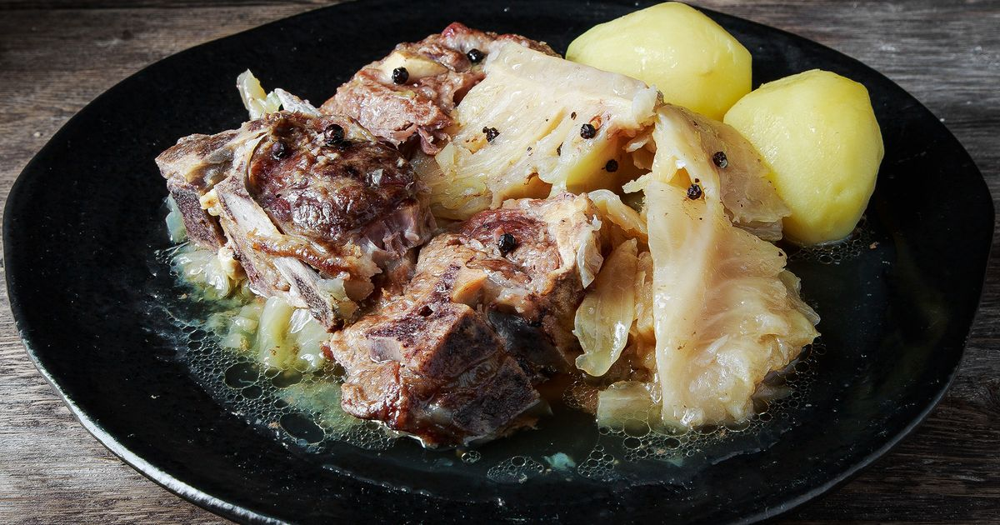

Fårikål

Description
A classic and delicious recipe for fårikål. The dish is easy to make, but the meat should be left to soak
for about 2.5 hours.
You can make fårikål the day before. Fårikål is considered by many to be Norway's
national dish and one of the gastronomic highlights of autumn. As an alternative to lamb, you can use
sheep meat.
Ingredients
- 1.5 kg lamb cabbage meat, meat with a little fat for extra flavour
- 1.5 kg head cabbage
- 2 tsp salt
- 5 tsp whole pepper
- 3.5 dl water for the fårikål
- a little wheat flour for levelling, optional,
- Arrange a layer of sliced lamb in the bottom of a Dutch oven or soup pot. Top with a layer of cabbage.
Repeat layering as many times as you can; season with salt to taste. Tie peppercorns into a small piece of
cheesecloth; place in center of casserole. Pour water in and cover with a lid.
- Bring to a boil; simmer over low heat for 2,5 hours. Remove peppercorns before serving.
- Optional: Boil potatoes and have as a side dish.